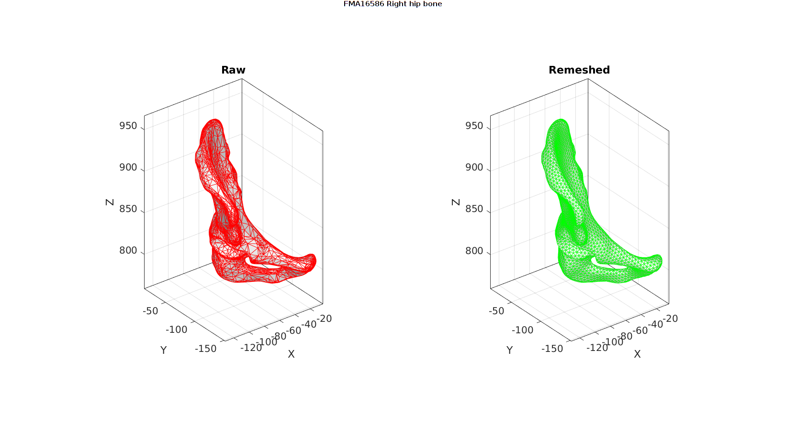
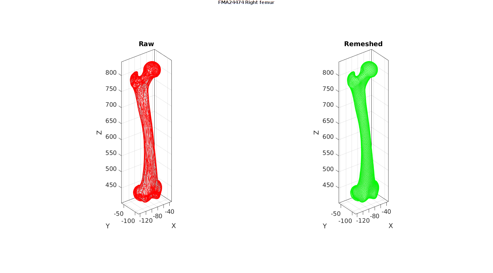
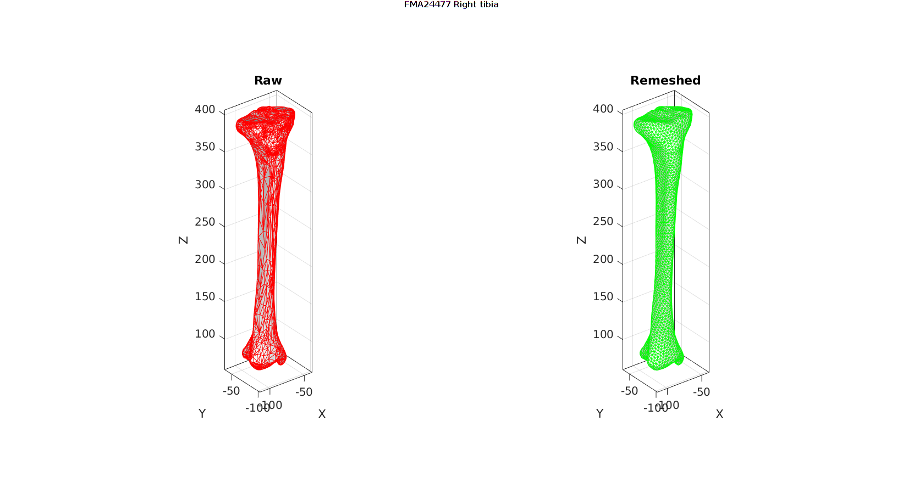
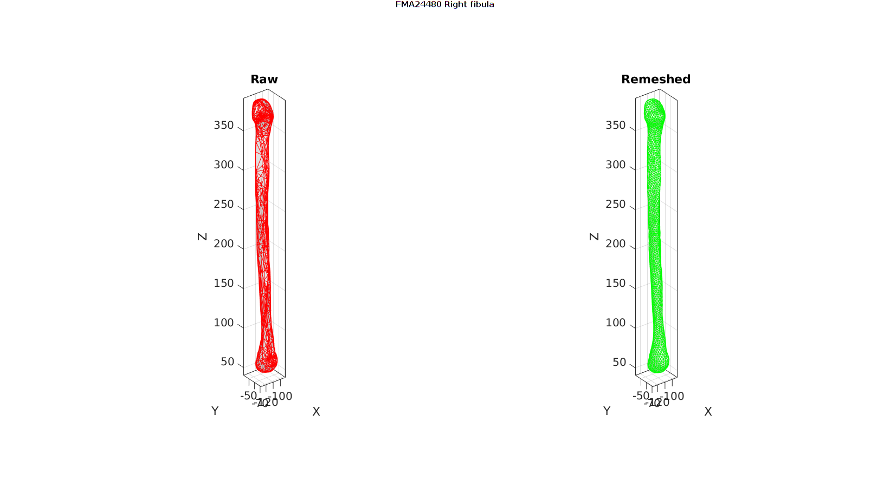
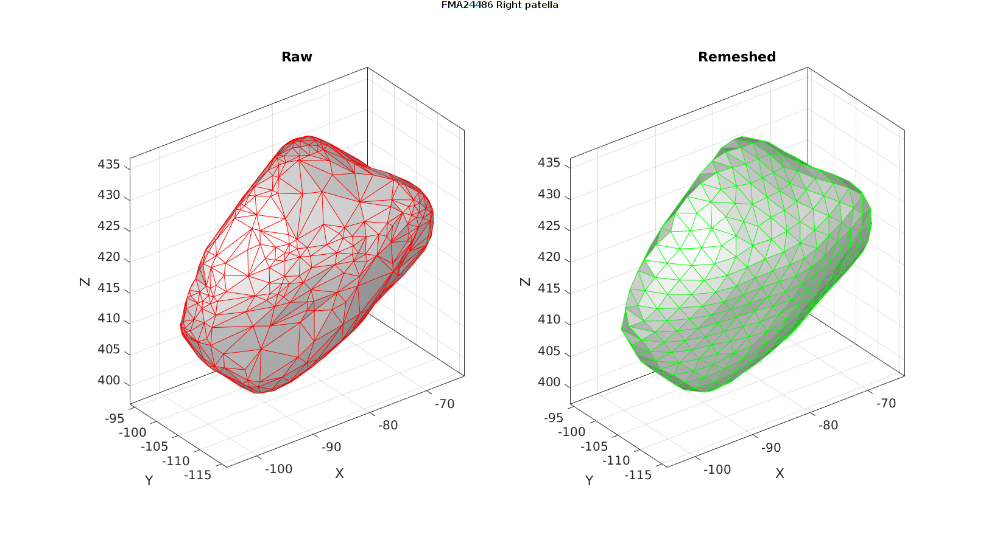

Contents
clear; close all; clc;
Description
This code parses a selection of MAT files in the /mat folder for surface meshes, and remeshes them at a desired point spacing. The remeshed surfaces are exported to the /post folder.
This code requires the GIBBON MATLAB toolbox www.gibboncode.org
Plotting settings
lineWidth=0.5;
Control parameters
% Path names projectFolder = fileparts(fileparts(mfilename('fullpath'))); %Main code path loadFolder=fullfile(projectFolder,'data','BodyParts3D','mat'); %The MAT loading folder saveFolder=fullfile(projectFolder,'data','BodyParts3D','post'); %The MAT saving folder for processed data fileNames_FMA={'FMA16586','FMA24474','FMA24477','FMA24480','FMA24486'}; pointSpacings=[4 4 4 3 3]; optionStructRemesh.disp_on=0; % Turn off command window text display saveOn=0;
for q=1:1:numel(fileNames_FMA)
Import mesh
fileName_FMA=fileNames_FMA{q};
fileName_mat=fullfile(loadFolder,[fileName_FMA,'.mat']);
model=load(fileName_mat);
F=model.faces;
V=model.vertices;
Remesh
optionStructRemesh.pointSpacing=pointSpacings(q); %Set desired point spacing
[Fn,Vn]=ggremesh(F,V,optionStructRemesh);
Visualisation
cFigure;
gtitle([fileName_FMA,' ',model.preferredName])
subplot(1,2,1);
title('Raw');
gpatch(F,V,'w','r',1,lineWidth);
axisGeom;
camlight headlight;
subplot(1,2,2);
title('Remeshed');
gpatch(Fn,Vn,'w','g',1,lineWidth);
axisGeom;
camlight headlight;
gdrawnow;
     Saving
modelNew.source=model;
modelNew.faces=Fn;
modelNew.vertices=Vn;
modelNew.pointSpacing=pointSpacings(q);
if saveOn==1
%Create save name with lowercase letters and underscores instead of spaces
saveNameMesh=regexprep(lower(model.preferredName),' ','_');
saveName_mat=fullfile(saveFolder,[saveNameMesh,'.mat']);
save(saveName_mat,'-struct','modelNew')
end
end
SimuLimb footer text
License: https://github.com/SimuLimb/simulateAmputation.m/blob/main/LICENSE Copyright (C) 2006-2021 Kevin Mattheus Moerman and the SimuLimb contributors
Licensed under the Apache License, Version 2.0 (the "License"); you may not use this file except in compliance with the License. You may obtain a copy of the License at
http://www.apache.org/licenses/LICENSE-2.0
Unless required by applicable law or agreed to in writing, software distributed under the License is distributed on an "AS IS" BASIS, WITHOUT WARRANTIES OR CONDITIONS OF ANY KIND, either express or implied. See the License for the specific language governing permissions and limitations under the License.